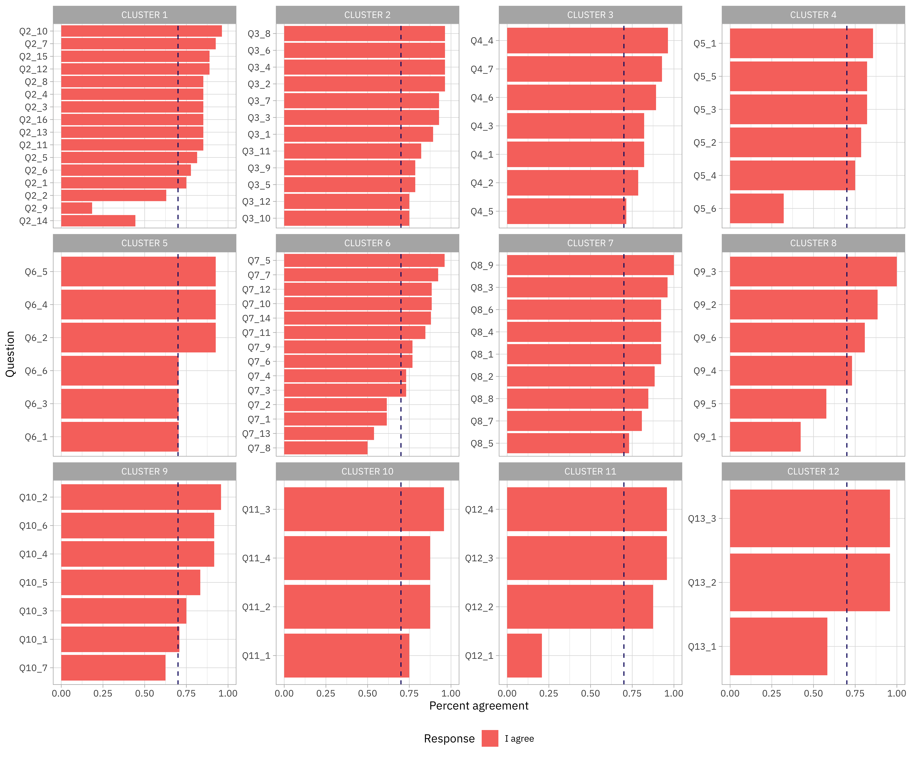

| Variable | Type | Label | Summary |
|---|---|---|---|
| StartDate | POSIXct | Start Date NA | NA |
| EndDate | POSIXct | End Date NA | NA |
| Status | character | Response Type NA | Categories=1 |
| IPAddress | character | IP Address NA | Categories=29 |
| Progress | numeric | Progress NA | Mean=88.6551724137931, Min=0, Max=100 |
| Duration (in seconds) | numeric | Duration (in seconds) NA | Mean=70272.1379310345, Min=52, Max=691142 |
| Finished | logical | Finished NA | NA |
| RecordedDate | POSIXct | Recorded Date NA | NA |
| ResponseId | character | Response ID NA | Categories=29 |
| ExternalReference | character | External Data Reference NA | Categories=1 |
| LocationLatitude | numeric | Location Latitude NA | Mean=43.7893583333333, Min=-33.769, Max=60.3433 |
| LocationLongitude | numeric | Location Longitude NA | Mean=-14.5151208333333, Min=-123.1234, Max=150.7782 |
| DistributionChannel | character | Distribution Channel NA | Categories=1 |
| UserLanguage | character | User Language NA | Categories=1 |
| Q1 | ordered | DELPHI EXPERT CONSULTATION - ROUND 2 Thank you for your continued engagement in this Delphi expert consultation, which aims to produce evidence-informed and contextually appropriate practical guidance for frontline staff in conducting transcultural conversations with asylum seekers about their mental health and potential mental health and psychosocial support (MHPSS) needs. We appreciate the time that you are willing to devote to this and the value that you add to it! In this second round, we provide you with the aggregated list of 94 unique statements from all experts and simply ask you to indicate whether or not you agree with each of the statements. There is one straightforward question - ROUND 2 | Categories=1 |
| Q2_1 | character | CLUSTER 1 - Acknowledge that cultural backgrounds and societal positions interact in determining mental health experiences. | Categories=4 |
| Q2_1_4_TEXT | character | CLUSTER 1 - Acknowledge that cultural backgrounds and societal positions interact in determining mental health experiences. - I agree if modified | Categories=7 |
| Q2_2 | character | CLUSTER 1 - Avoid excessive culturalisation and a disproportionate emphasis on cultural influences and stereotypes, to the detriment of other important considerations during the conversation. | Categories=4 |
| Q2_2_4_TEXT | character | CLUSTER 1 - Avoid excessive culturalisation and a disproportionate emphasis on cultural influences and stereotypes, to the detriment of other important considerations during the conversation. - I agree if modified | Categories=9 |
| Q2_3 | character | CLUSTER 1 - Be aware of ethnocentrism | Categories=4 |
| Q2_3_4_TEXT | character | CLUSTER 1 - Be aware of ethnocentrism - I agree if modified | Categories=4 |
| Q2_4 | character | CLUSTER 1 - Be aware of the unique characteristics of the resident (e.g. ethnic, cultural, spiritual, social, educational, linguistic) and how these may influence mental health conversations. | Categories=3 |
| Q2_4_4_TEXT | character | CLUSTER 1 - Be aware of the unique characteristics of the resident (e.g. ethnic, cultural, spiritual, social, educational, linguistic) and how these may influence mental health conversations. - I agree if modified | Categories=4 |
| Q2_5 | character | CLUSTER 1 - Be aware of the wide range of concepts, definitions and idioms of mental health, used by asylum seekers to communicate about their needs. | Categories=4 |
| Q2_5_4_TEXT | character | CLUSTER 1 - Be aware of the wide range of concepts, definitions and idioms of mental health, used by asylum seekers to communicate about their needs. - I agree if modified | Categories=4 |
| Q2_6 | character | CLUSTER 1 - Be aware that for many asylum seekers there is a strong connection between spirituality and mental health. | Categories=4 |
| Q2_6_4_TEXT | character | CLUSTER 1 - Be aware that for many asylum seekers there is a strong connection between spirituality and mental health. - I agree if modified | Categories=5 |
| Q2_7 | character | CLUSTER 1 - Be aware that the use of certain terms and labels can be stigmatising for asylum seekers. | Categories=4 |
| Q2_7_4_TEXT | character | CLUSTER 1 - Be aware that the use of certain terms and labels can be stigmatising for asylum seekers. - I agree if modified | Categories=2 |
| Q2_8 | character | CLUSTER 1 - Be knowledgeable about how cultural backgrounds can shape the understanding, experience and expression of mental health. | Categories=3 |
| Q2_8_4_TEXT | character | CLUSTER 1 - Be knowledgeable about how cultural backgrounds can shape the understanding, experience and expression of mental health. - I agree if modified | Categories=4 |
| Q2_9 | character | CLUSTER 1 - Belong to the asylum seeker's culture and speak the language. | Categories=4 |
| Q2_9_4_TEXT | character | CLUSTER 1 - Belong to the asylum seeker's culture and speak the language. - I agree if modified | Categories=7 |
| Q2_10 | character | CLUSTER 1 - Check the cultural appropriateness of mental health assessment tools and interpret results with caution. | Categories=3 |
| Q2_10_4_TEXT | character | CLUSTER 1 - Check the cultural appropriateness of mental health assessment tools and interpret results with caution. - I agree if modified | Categories=2 |
| Q2_11 | character | CLUSTER 1 - Demonstrate openness to cultural differences and cultural humility. | Categories=3 |
| Q2_11_4_TEXT | character | CLUSTER 1 - Demonstrate openness to cultural differences and cultural humility. - I agree if modified | Categories=4 |
| Q2_12 | character | CLUSTER 1 - Do not cast Western mental health categories as universal, avoiding the category fallacy. | Categories=3 |
| Q2_12_4_TEXT | character | CLUSTER 1 - Do not cast Western mental health categories as universal, avoiding the category fallacy. - I agree if modified | Categories=4 |
| Q2_13 | character | CLUSTER 1 - Encourage an in-depth exchange of views on mental health (care) and be committed to learning about asylum seekers’ views. | Categories=4 |
| Q2_13_4_TEXT | character | CLUSTER 1 - Encourage an in-depth exchange of views on mental health (care) and be committed to learning about asylum seekers’ views. - I agree if modified | Categories=3 |
| Q2_14 | character | CLUSTER 1 - Informally assess the asylum seeker's level of host culture acculturation. | Categories=4 |
| Q2_14_4_TEXT | character | CLUSTER 1 - Informally assess the asylum seeker's level of host culture acculturation. - I agree if modified | Categories=9 |
| Q2_15 | character | CLUSTER 1 - Reflect on the influence and limitations of your own cultural context, views and biases. | Categories=4 |
| Q2_15_4_TEXT | character | CLUSTER 1 - Reflect on the influence and limitations of your own cultural context, views and biases. - I agree if modified | Categories=3 |
| Q2_16 | character | CLUSTER 1 - Understand and recognise common mental health challenges and their varied manifestations among asylum seekers. | Categories=4 |
| Q2_16_4_TEXT | character | CLUSTER 1 - Understand and recognise common mental health challenges and their varied manifestations among asylum seekers. - I agree if modified | Categories=3 |
| Q3_1 | character | CLUSTER 2 - Be compassionate. | Categories=4 |
| Q3_1_4_TEXT | character | CLUSTER 2 - Be compassionate. - I agree if modified | Categories=2 |
| Q3_2 | character | CLUSTER 2 - Be curious. | Categories=3 |
| Q3_2_4_TEXT | character | CLUSTER 2 - Be curious. - I agree if modified | Categories=2 |
| Q3_3 | character | CLUSTER 2 - Be empathic. | Categories=3 |
| Q3_3_4_TEXT | character | CLUSTER 2 - Be empathic. - I agree if modified | Categories=2 |
| Q3_4 | character | CLUSTER 2 - Be trustworthy and honest about your limitations and those of the system in which you operate. | Categories=2 |
| Q3_4_4_TEXT | logical | CLUSTER 2 - Be trustworthy and honest about your limitations and those of the system in which you operate. - I agree if modified | NA |
| Q3_5 | character | CLUSTER 2 - Demonstrate deep respect for asylum seekers, not judge them. | Categories=4 |
| Q3_5_4_TEXT | character | CLUSTER 2 - Demonstrate deep respect for asylum seekers, not judge them. - I agree if modified | Categories=3 |
| Q3_6 | character | CLUSTER 2 - Establish a relationship that promotes safety and builds trust. | Categories=3 |
| Q3_6_4_TEXT | character | CLUSTER 2 - Establish a relationship that promotes safety and builds trust. - I agree if modified | Categories=2 |
| Q3_7 | character | CLUSTER 2 - Establish rapport and working alliance. | Categories=3 |
| Q3_7_4_TEXT | character | CLUSTER 2 - Establish rapport and working alliance. - I agree if modified | Categories=2 |
| Q3_8 | character | CLUSTER 2 - Foster a safe and welcoming environment so that asylum seekers feel valued and understood. | Categories=3 |
| Q3_8_4_TEXT | character | CLUSTER 2 - Foster a safe and welcoming environment so that asylum seekers feel valued and understood. - I agree if modified | Categories=2 |
| Q3_9 | character | CLUSTER 2 - Look for ways to connect with the asylum seeker to create a basis for the conversation. | Categories=4 |
| Q3_9_4_TEXT | character | CLUSTER 2 - Look for ways to connect with the asylum seeker to create a basis for the conversation. - I agree if modified | Categories=3 |
| Q3_10 | character | CLUSTER 2 - Show your humanity and approach asylum seekers as human beings with struggles, challenges, hopes and dreams similar to your own. | Categories=4 |
| Q3_10_4_TEXT | character | CLUSTER 2 - Show your humanity and approach asylum seekers as human beings with struggles, challenges, hopes and dreams similar to your own. - I agree if modified | Categories=5 |
| Q3_11 | character | CLUSTER 2 - Show your willingness and availability to help. | Categories=4 |
| Q3_11_4_TEXT | character | CLUSTER 2 - Show your willingness and availability to help. - I agree if modified | Categories=3 |
| Q3_12 | character | CLUSTER 2 - Spend time interacting with asylum seekers to understand their needs. | Categories=4 |
| Q3_12_4_TEXT | character | CLUSTER 2 - Spend time interacting with asylum seekers to understand their needs. - I agree if modified | Categories=6 |
| Q4_1 | character | CLUSTER 3 - Accommodate communicative needs, barriers and limitations by including translators or multilingual colleagues in the conversation. | Categories=4 |
| Q4_1_4_TEXT | character | CLUSTER 3 - Accommodate communicative needs, barriers and limitations by including translators or multilingual colleagues in the conversation. - I agree if modified | Categories=5 |
| Q4_2 | character | CLUSTER 3 - Listen actively. | Categories=4 |
| Q4_2_4_TEXT | character | CLUSTER 3 - Listen actively. - I agree if modified | Categories=4 |
| Q4_3 | character | CLUSTER 3 - Be aware of language nuances and that things can get lost in translation. | Categories=4 |
| Q4_3_4_TEXT | character | CLUSTER 3 - Be aware of language nuances and that things can get lost in translation. - I agree if modified | Categories=4 |
| Q4_4 | character | CLUSTER 3 - Pay attention to non-verbal communication. | Categories=3 |
| Q4_4_4_TEXT | character | CLUSTER 3 - Pay attention to non-verbal communication. - I agree if modified | Categories=2 |
| Q4_5 | character | CLUSTER 3 - Ask open-ended questions. | Categories=4 |
| Q4_5_4_TEXT | character | CLUSTER 3 - Ask open-ended questions. - I agree if modified | Categories=6 |
| Q4_6 | character | CLUSTER 3 - Conduct mental health conversations at a pace that is comfortable and tolerable for asylum seekers. | Categories=4 |
| Q4_6_4_TEXT | character | CLUSTER 3 - Conduct mental health conversations at a pace that is comfortable and tolerable for asylum seekers. - I agree if modified | Categories=3 |
| Q4_7 | character | CLUSTER 3 - Adapt your communication style to suit the person and the situation at hand. | Categories=3 |
| Q4_7_4_TEXT | character | CLUSTER 3 - Adapt your communication style to suit the person and the situation at hand. - I agree if modified | Categories=2 |
| Q5_1 | character | CLUSTER 4 - Avoid imposing your own views and approaches on asylum seekers. | Categories=4 |
| Q5_1_4_TEXT | character | CLUSTER 4 - Avoid imposing your own views and approaches on asylum seekers. - I agree if modified | Categories=3 |
| Q5_2 | character | CLUSTER 4 - Be committed to identifying and working with asylum seekers' preferred approaches and resources for managing mental health and reducing distress. | Categories=4 |
| Q5_2_4_TEXT | character | CLUSTER 4 - Be committed to identifying and working with asylum seekers' preferred approaches and resources for managing mental health and reducing distress. - I agree if modified | Categories=4 |
| Q5_3 | character | CLUSTER 4 - Centre the asylum seekers' voices and the priorities they highlight during the conversation, accepting that they may be different from your own. | Categories=4 |
| Q5_3_4_TEXT | character | CLUSTER 4 - Centre the asylum seekers' voices and the priorities they highlight during the conversation, accepting that they may be different from your own. - I agree if modified | Categories=5 |
| Q5_4 | character | CLUSTER 4 - Know that some behaviours require immediate professional attention to save lives. | Categories=4 |
| Q5_4_4_TEXT | character | CLUSTER 4 - Know that some behaviours require immediate professional attention to save lives. - I agree if modified | Categories=6 |
| Q5_5 | character | CLUSTER 4 - Respond to immediate concerns. | Categories=4 |
| Q5_5_4_TEXT | character | CLUSTER 4 - Respond to immediate concerns. - I agree if modified | Categories=5 |
| Q5_6 | character | CLUSTER 4 - Take the lead from asylum seekers. | Categories=4 |
| Q5_6_4_TEXT | character | CLUSTER 4 - Take the lead from asylum seekers. - I agree if modified | Categories=14 |
| Q6_1 | character | CLUSTER 5 - Approach the conversation from a strength (resilience) perspective to address feelings of powerlessness and helplessness. | Categories=4 |
| Q6_1_4_TEXT | character | CLUSTER 5 - Approach the conversation from a strength (resilience) perspective to address feelings of powerlessness and helplessness. - I agree if modified | Categories=6 |
| Q6_2 | character | CLUSTER 5 - Build a bridge between the asylum seeker's perspective and experiences and the resources and services available. | Categories=3 |
| Q6_2_4_TEXT | character | CLUSTER 5 - Build a bridge between the asylum seeker's perspective and experiences and the resources and services available. - I agree if modified | Categories=3 |
| Q6_3 | character | CLUSTER 5 - Encourage and enable asylum seekers to sustain existing relationships. | Categories=4 |
| Q6_3_4_TEXT | character | CLUSTER 5 - Encourage and enable asylum seekers to sustain existing relationships. - I agree if modified | Categories=8 |
| Q6_4 | character | CLUSTER 5 - Explore what has sustained the asylum seekers through their experiences and identify together how they can continue to use and build on these resources. | Categories=3 |
| Q6_4_4_TEXT | character | CLUSTER 5 - Explore what has sustained the asylum seekers through their experiences and identify together how they can continue to use and build on these resources. - I agree if modified | Categories=2 |
| Q6_5 | character | CLUSTER 5 - Facilitate connections with relevant community resources and support networks, aiding in the integration and social support of residents. | Categories=3 |
| Q6_5_4_TEXT | character | CLUSTER 5 - Facilitate connections with relevant community resources and support networks, aiding in the integration and social support of residents. - I agree if modified | Categories=2 |
| Q6_6 | character | CLUSTER 5 - Know the wide range of mental health resources and how to promote resilience. | Categories=4 |
| Q6_6_4_TEXT | character | CLUSTER 5 - Know the wide range of mental health resources and how to promote resilience. - I agree if modified | Categories=7 |
| Q7_1 | character | CLUSTER 6 - Adopt a survivor-centred approach. | Categories=4 |
| Q7_1_4_TEXT | character | CLUSTER 6 - Adopt a survivor-centred approach. - I agree if modified | Categories=8 |
| Q7_2 | character | CLUSTER 6 - Adopt a trauma-informed approach. | Categories=4 |
| Q7_2_4_TEXT | character | CLUSTER 6 - Adopt a trauma-informed approach. - I agree if modified | Categories=9 |
| Q7_3 | character | CLUSTER 6 - Be aware that mindfulness practices can help to gain some control over emotions. | Categories=4 |
| Q7_3_4_TEXT | character | CLUSTER 6 - Be aware that mindfulness practices can help to gain some control over emotions. - I agree if modified | Categories=6 |
| Q7_4 | character | CLUSTER 6 - Blend insights and approaches from diverse cultures in ways that promote well-being. | Categories=4 |
| Q7_4_4_TEXT | character | CLUSTER 6 - Blend insights and approaches from diverse cultures in ways that promote well-being. - I agree if modified | Categories=4 |
| Q7_5 | character | CLUSTER 6 - Contextualise and normalise asylum seekers' mental health presentations, taking into account their specific situation and unique context. | Categories=3 |
| Q7_5_4_TEXT | character | CLUSTER 6 - Contextualise and normalise asylum seekers' mental health presentations, taking into account their specific situation and unique context. - I agree if modified | Categories=2 |
| Q7_6 | character | CLUSTER 6 - Employ de-escalation techniques and support emotional regulation. | Categories=4 |
| Q7_6_4_TEXT | character | CLUSTER 6 - Employ de-escalation techniques and support emotional regulation. - I agree if modified | Categories=6 |
| Q7_7 | character | CLUSTER 6 - Implement protocols, approaches and interventions that are sensitive to cultural differences among asylum seekers. | Categories=4 |
| Q7_7_4_TEXT | character | CLUSTER 6 - Implement protocols, approaches and interventions that are sensitive to cultural differences among asylum seekers. - I agree if modified | Categories=2 |
| Q7_8 | character | CLUSTER 6 - Initiate scalable psychological interventions. | Categories=4 |
| Q7_8_4_TEXT | character | CLUSTER 6 - Initiate scalable psychological interventions. - I agree if modified | Categories=8 |
| Q7_9 | character | CLUSTER 6 - Know how to help prevent gender-based violence and child protection violations. | Categories=3 |
| Q7_9_4_TEXT | character | CLUSTER 6 - Know how to help prevent gender-based violence and child protection violations. - I agree if modified | Categories=7 |
| Q7_10 | character | CLUSTER 6 - Know that even short conversations can be very significant. | Categories=4 |
| Q7_10_4_TEXT | character | CLUSTER 6 - Know that even short conversations can be very significant. - I agree if modified | Categories=2 |
| Q7_11 | character | CLUSTER 6 - Pay attention to mind-body connections and psychosomatic experiences and expressions. | Categories=4 |
| Q7_11_4_TEXT | character | CLUSTER 6 - Pay attention to mind-body connections and psychosomatic experiences and expressions. - I agree if modified | Categories=3 |
| Q7_12 | character | CLUSTER 6 - Provide assistance with practical challenges and accompany asylum seekers in meeting requirements. | Categories=4 |
| Q7_12_4_TEXT | character | CLUSTER 6 - Provide assistance with practical challenges and accompany asylum seekers in meeting requirements. - I agree if modified | Categories=3 |
| Q7_13 | character | CLUSTER 6 - Provide psychological first aid. | Categories=4 |
| Q7_13_4_TEXT | character | CLUSTER 6 - Provide psychological first aid. - I agree if modified | Categories=10 |
| Q7_14 | character | CLUSTER 6 - Understand the importance of family and a collective approach to help seeking. | Categories=3 |
| Q7_14_4_TEXT | character | CLUSTER 6 - Understand the importance of family and a collective approach to help seeking. - I agree if modified | Categories=4 |
| Q8_1 | character | CLUSTER 7 - Be familiar with the basics of the asylum policy and procedure and have resources to help asylum seekers find answers to their questions. | Categories=3 |
| Q8_1_4_TEXT | character | CLUSTER 7 - Be familiar with the basics of the asylum policy and procedure and have resources to help asylum seekers find answers to their questions. - I agree if modified | Categories=3 |
| Q8_2 | character | CLUSTER 7 - Consider pre-, peri- and post-migration stressors and their impact on mental health. | Categories=3 |
| Q8_2_4_TEXT | character | CLUSTER 7 - Consider pre-, peri- and post-migration stressors and their impact on mental health. - I agree if modified | Categories=4 |
| Q8_3 | character | CLUSTER 7 - Have an understanding of the context of displacement and (forced) migration, the kinds of situations that asylum seekers are likely to have been exposed to and how this may impact on mental health. | Categories=3 |
| Q8_3_4_TEXT | character | CLUSTER 7 - Have an understanding of the context of displacement and (forced) migration, the kinds of situations that asylum seekers are likely to have been exposed to and how this may impact on mental health. - I agree if modified | Categories=2 |
| Q8_4 | character | CLUSTER 7 - Keep in mind that asylum seekers may have had to tell their story many times, sometimes in hostile circumstances. | Categories=3 |
| Q8_4_4_TEXT | character | CLUSTER 7 - Keep in mind that asylum seekers may have had to tell their story many times, sometimes in hostile circumstances. - I agree if modified | Categories=3 |
| Q8_5 | character | CLUSTER 7 - Realise that asylum seekers are typically struggling with a series of practical challenges that they need to solve before they are ready to address their mental health issues. | Categories=3 |
| Q8_5_4_TEXT | character | CLUSTER 7 - Realise that asylum seekers are typically struggling with a series of practical challenges that they need to solve before they are ready to address their mental health issues. - I agree if modified | Categories=8 |
| Q8_6 | character | CLUSTER 7 - Realise that systemic and structural factors influence an individual's mental health capacity and needs. | Categories=4 |
| Q8_6_4_TEXT | character | CLUSTER 7 - Realise that systemic and structural factors influence an individual's mental health capacity and needs. - I agree if modified | Categories=2 |
| Q8_7 | character | CLUSTER 7 - Realise that the organisational context and characteristics influence mental health conversations with asylum seekers. | Categories=4 |
| Q8_7_4_TEXT | character | CLUSTER 7 - Realise that the organisational context and characteristics influence mental health conversations with asylum seekers. - I agree if modified | Categories=3 |
| Q8_8 | character | CLUSTER 7 - Recognise that asylum applications and procedures evoke strong emotions. | Categories=4 |
| Q8_8_4_TEXT | character | CLUSTER 7 - Recognise that asylum applications and procedures evoke strong emotions. - I agree if modified | Categories=4 |
| Q8_9 | character | CLUSTER 7 - Understand that current living conditions and experiences can trigger and exacerbate mental health challenges. | Categories=2 |
| Q8_9_4_TEXT | logical | CLUSTER 7 - Understand that current living conditions and experiences can trigger and exacerbate mental health challenges. - I agree if modified | NA |
| Q9_1 | character | CLUSTER 8 - Express support for the resident’s asylum claim. | Categories=4 |
| Q9_1_4_TEXT | character | CLUSTER 8 - Express support for the resident’s asylum claim. - I agree if modified | Categories=11 |
| Q9_2 | character | CLUSTER 8 - Identify and acknowledge injustices faced by asylum seekers. | Categories=4 |
| Q9_2_4_TEXT | character | CLUSTER 8 - Identify and acknowledge injustices faced by asylum seekers. - I agree if modified | Categories=3 |
| Q9_3 | character | CLUSTER 8 - Identify barriers that may prevent asylum seekers from benefiting from particular approaches, interventions and treatments. | Categories=2 |
| Q9_3_4_TEXT | logical | CLUSTER 8 - Identify barriers that may prevent asylum seekers from benefiting from particular approaches, interventions and treatments. - I agree if modified | NA |
| Q9_4 | character | CLUSTER 8 - Mitigate power inequalities in the relationship and show your commitment to equity. | Categories=4 |
| Q9_4_4_TEXT | character | CLUSTER 8 - Mitigate power inequalities in the relationship and show your commitment to equity. - I agree if modified | Categories=6 |
| Q9_5 | character | CLUSTER 8 - Recognise and resist oppressive government policies and measures. | Categories=4 |
| Q9_5_4_TEXT | character | CLUSTER 8 - Recognise and resist oppressive government policies and measures. - I agree if modified | Categories=7 |
| Q9_6 | character | CLUSTER 8 - Safeguard human rights and social justice. | Categories=3 |
| Q9_6_4_TEXT | character | CLUSTER 8 - Safeguard human rights and social justice. - I agree if modified | Categories=6 |
| Q10_1 | character | CLUSTER 9 - Be aware of the fact that this work implicitly or explicitly has an impact on the way you perceive political debate. | Categories=4 |
| Q10_1_4_TEXT | character | CLUSTER 9 - Be aware of the fact that this work implicitly or explicitly has an impact on the way you perceive political debate. - I agree if modified | Categories=5 |
| Q10_2 | character | CLUSTER 9 - Be mindful of not abusing your power. | Categories=3 |
| Q10_2_4_TEXT | logical | CLUSTER 9 - Be mindful of not abusing your power. - I agree if modified | NA |
| Q10_3 | character | CLUSTER 9 - Be prepared to tolerate strong emotions. | Categories=3 |
| Q10_3_4_TEXT | character | CLUSTER 9 - Be prepared to tolerate strong emotions. - I agree if modified | Categories=7 |
| Q10_4 | character | CLUSTER 9 - Commit to ongoing professional development, be open to learning from your work and to be supported in reflecting on your mental health conversations with asylum seekers. | Categories=3 |
| Q10_4_4_TEXT | character | CLUSTER 9 - Commit to ongoing professional development, be open to learning from your work and to be supported in reflecting on your mental health conversations with asylum seekers. - I agree if modified | Categories=3 |
| Q10_5 | character | CLUSTER 9 - Engage in self-care and well-being practices, to take care of your own mental health. | Categories=4 |
| Q10_5_4_TEXT | character | CLUSTER 9 - Engage in self-care and well-being practices, to take care of your own mental health. - I agree if modified | Categories=4 |
| Q10_6 | character | CLUSTER 9 - Reflect on the influence of your own life history and experiences. | Categories=3 |
| Q10_6_4_TEXT | character | CLUSTER 9 - Reflect on the influence of your own life history and experiences. - I agree if modified | Categories=3 |
| Q10_7 | character | CLUSTER 9 - Tolerate feelings of powerlessness and helplessness due to lack of immediate solutions. | Categories=4 |
| Q10_7_4_TEXT | character | CLUSTER 9 - Tolerate feelings of powerlessness and helplessness due to lack of immediate solutions. - I agree if modified | Categories=8 |
| Q11_1 | character | CLUSTER 10 - Collaborate with peer workers who share lived experiences with the residents. | Categories=4 |
| Q11_1_4_TEXT | character | CLUSTER 10 - Collaborate with peer workers who share lived experiences with the residents. - I agree if modified | Categories=4 |
| Q11_2 | character | CLUSTER 10 - Collaborate with people who can provide experience-based insights into cultural meanings and understandings of mental health. | Categories=3 |
| Q11_2_4_TEXT | character | CLUSTER 10 - Collaborate with people who can provide experience-based insights into cultural meanings and understandings of mental health. - I agree if modified | Categories=4 |
| Q11_3 | character | CLUSTER 10 - Navigate available services and know when and where to orientate asylum seekers in need of additional support. | Categories=3 |
| Q11_3_4_TEXT | character | CLUSTER 10 - Navigate available services and know when and where to orientate asylum seekers in need of additional support. - I agree if modified | Categories=2 |
| Q11_4 | character | CLUSTER 10 - Work in a network that addresses different areas of life, in the knowledge that a holistic, multi-sectoral approach is essential. | Categories=4 |
| Q11_4_4_TEXT | character | CLUSTER 10 - Work in a network that addresses different areas of life, in the knowledge that a holistic, multi-sectoral approach is essential. - I agree if modified | Categories=3 |
| Q12_1 | character | CLUSTER 11 - Be willing to bend and defy rules and regulations. | Categories=4 |
| Q12_1_4_TEXT | character | CLUSTER 11 - Be willing to bend and defy rules and regulations. - I agree if modified | Categories=9 |
| Q12_2 | character | CLUSTER 11 - Check the asylum seekers’ consent to talk about certain issues, understanding that they may face barriers to having mental health conversations and disclosing mental health needs. | Categories=4 |
| Q12_2_4_TEXT | character | CLUSTER 11 - Check the asylum seekers’ consent to talk about certain issues, understanding that they may face barriers to having mental health conversations and disclosing mental health needs. - I agree if modified | Categories=2 |
| Q12_3 | character | CLUSTER 11 - Communicate clearly about confidentiality and be transparent about its limits. | Categories=3 |
| Q12_3_4_TEXT | character | CLUSTER 11 - Communicate clearly about confidentiality and be transparent about its limits. - I agree if modified | Categories=2 |
| Q12_4 | character | CLUSTER 11 - Respect the imperative of "do no harm" and the principles of ethical conduct. | Categories=3 |
| Q12_4_4_TEXT | character | CLUSTER 11 - Respect the imperative of "do no harm" and the principles of ethical conduct. - I agree if modified | Categories=2 |
| Q13_1 | character | CLUSTER 12 - Avoid eliciting detailed recounts of past experiences, and instead focus on the impact and resulting needs. | Categories=3 |
| Q13_1_4_TEXT | character | CLUSTER 12 - Avoid eliciting detailed recounts of past experiences, and instead focus on the impact and resulting needs. - I agree if modified | Categories=11 |
| Q13_2 | character | CLUSTER 12 - Understand that trauma affects memory and can lead to inconsistent narratives from asylum seekers. | Categories=3 |
| Q13_2_4_TEXT | character | CLUSTER 12 - Understand that trauma affects memory and can lead to inconsistent narratives from asylum seekers. - I agree if modified | Categories=2 |
| Q13_3 | character | CLUSTER 12 - Choose a place for the conversations that feels safe to the asylum seeker. | Categories=3 |
| Q13_3_4_TEXT | character | CLUSTER 12 - Choose a place for the conversations that feels safe to the asylum seeker. - I agree if modified | Categories=2 |
| Q14 | character | If you wish, you can use this 'Comments' box to share additional thoughts, questions or comments about this round. If your comment applies to a particular cluster of statements, please indicate this. NA | Categories=9 |
Delphi Round 2
Survey metrics
Number of responses: 29
Number of complete responses: 24
First response: 2024-01-22 09:28:24
Last response: 2024-01-31 22:54:28
Data dictionary
Summary results
Agreement per cluster - plot

Counts and proportions of non text questions per cluster
CLUSTER 1
| Q2_1 | n | valid prop |
|---|---|---|
| I agree | 20 | 0.74 |
| I agree if modified | 6 | 0.22 |
| I disagree | 1 | 0.04 |
| NA | 2 |
|
| Q2_2 | n | valid prop |
|---|---|---|
| I agree | 16 | 0.62 |
| I agree if modified | 8 | 0.31 |
| I disagree | 2 | 0.08 |
| NA | 3 |
|
| Q2_3 | n | valid prop |
|---|---|---|
| I agree | 22 | 0.85 |
| I agree if modified | 3 | 0.12 |
| I disagree | 1 | 0.04 |
| NA | 3 |
|
| Q2_4 | n | valid prop |
|---|---|---|
| I agree | 23 | 0.88 |
| I agree if modified | 3 | 0.12 |
| NA | 3 |
|
| Q2_5 | n | valid prop |
|---|---|---|
| I agree | 21 | 0.81 |
| I agree if modified | 3 | 0.12 |
| I disagree | 2 | 0.08 |
| NA | 3 |
|
| Q2_6 | n | valid prop |
|---|---|---|
| I agree | 20 | 0.77 |
| I agree if modified | 4 | 0.15 |
| I disagree | 2 | 0.08 |
| NA | 3 |
|
| Q2_7 | n | valid prop |
|---|---|---|
| I agree | 24 | 0.92 |
| I agree if modified | 1 | 0.04 |
| I disagree | 1 | 0.04 |
| NA | 3 |
|
| Q2_8 | n | valid prop |
|---|---|---|
| I agree | 23 | 0.88 |
| I agree if modified | 3 | 0.12 |
| NA | 3 |
|
| Q2_9 | n | valid prop |
|---|---|---|
| I agree | 4 | 0.15 |
| I agree if modified | 7 | 0.27 |
| I disagree | 15 | 0.58 |
| NA | 3 |
|
| Q2_10 | n | valid prop |
|---|---|---|
| I agree | 25 | 0.96 |
| I agree if modified | 1 | 0.04 |
| NA | 3 |
|
| Q2_11 | n | valid prop |
|---|---|---|
| I agree | 23 | 0.88 |
| I agree if modified | 3 | 0.12 |
| NA | 3 |
|
| Q2_12 | n | valid prop |
|---|---|---|
| I agree | 23 | 0.88 |
| I agree if modified | 3 | 0.12 |
| NA | 3 |
|
| Q2_13 | n | valid prop |
|---|---|---|
| I agree | 22 | 0.85 |
| I agree if modified | 2 | 0.08 |
| I disagree | 2 | 0.08 |
| NA | 3 |
|
| Q2_14 | n | valid prop |
|---|---|---|
| I agree | 11 | 0.42 |
| I agree if modified | 8 | 0.31 |
| I disagree | 7 | 0.27 |
| NA | 3 |
|
| Q2_15 | n | valid prop |
|---|---|---|
| I agree | 23 | 0.88 |
| I agree if modified | 2 | 0.08 |
| I disagree | 1 | 0.04 |
| NA | 3 |
|
| Q2_16 | n | valid prop |
|---|---|---|
| I agree | 22 | 0.85 |
| I agree if modified | 2 | 0.08 |
| I disagree | 2 | 0.08 |
| NA | 3 |
|
CLUSTER 2
| Q3_1 | n | valid prop |
|---|---|---|
| I agree | 25 | 0.93 |
| I agree if modified | 1 | 0.04 |
| I disagree | 1 | 0.04 |
| NA | 2 |
|
| Q3_2 | n | valid prop |
|---|---|---|
| I agree | 26 | 0.96 |
| I agree if modified | 1 | 0.04 |
| NA | 2 |
|
| Q3_3 | n | valid prop |
|---|---|---|
| I agree | 25 | 0.93 |
| I agree if modified | 2 | 0.07 |
| NA | 2 |
|
| Q3_4 | n | valid prop |
|---|---|---|
| I agree | 27 | 1 |
| NA | 2 |
|
| Q3_5 | n | valid prop |
|---|---|---|
| I agree | 22 | 0.81 |
| I agree if modified | 3 | 0.11 |
| I disagree | 2 | 0.07 |
| NA | 2 |
|
| Q3_6 | n | valid prop |
|---|---|---|
| I agree | 26 | 0.96 |
| I agree if modified | 1 | 0.04 |
| NA | 2 |
|
| Q3_7 | n | valid prop |
|---|---|---|
| I agree | 26 | 0.96 |
| I agree if modified | 1 | 0.04 |
| NA | 2 |
|
| Q3_8 | n | valid prop |
|---|---|---|
| I agree | 26 | 0.96 |
| I agree if modified | 1 | 0.04 |
| NA | 2 |
|
| Q3_9 | n | valid prop |
|---|---|---|
| I agree | 22 | 0.81 |
| I agree if modified | 2 | 0.07 |
| I disagree | 3 | 0.11 |
| NA | 2 |
|
| Q3_10 | n | valid prop |
|---|---|---|
| I agree | 20 | 0.74 |
| I agree if modified | 4 | 0.15 |
| I disagree | 3 | 0.11 |
| NA | 2 |
|
| Q3_11 | n | valid prop |
|---|---|---|
| I agree | 23 | 0.85 |
| I agree if modified | 2 | 0.07 |
| I disagree | 2 | 0.07 |
| NA | 2 |
|
| Q3_12 | n | valid prop |
|---|---|---|
| I agree | 20 | 0.74 |
| I agree if modified | 5 | 0.19 |
| I disagree | 2 | 0.07 |
| NA | 2 |
|
CLUSTER 3
| Q4_1 | n | valid prop |
|---|---|---|
| I agree | 22 | 0.81 |
| I agree if modified | 4 | 0.15 |
| I disagree | 1 | 0.04 |
| NA | 2 |
|
| Q4_2 | n | valid prop |
|---|---|---|
| I agree | 22 | 0.81 |
| I agree if modified | 3 | 0.11 |
| I disagree | 2 | 0.07 |
| NA | 2 |
|
| Q4_3 | n | valid prop |
|---|---|---|
| I agree | 23 | 0.85 |
| I agree if modified | 3 | 0.11 |
| I disagree | 1 | 0.04 |
| NA | 2 |
|
| Q4_4 | n | valid prop |
|---|---|---|
| I agree | 26 | 0.96 |
| I agree if modified | 1 | 0.04 |
| NA | 2 |
|
| Q4_5 | n | valid prop |
|---|---|---|
| I agree | 19 | 0.7 |
| I agree if modified | 5 | 0.19 |
| I disagree | 3 | 0.11 |
| NA | 2 |
|
| Q4_6 | n | valid prop |
|---|---|---|
| I agree | 24 | 0.89 |
| I agree if modified | 2 | 0.07 |
| I disagree | 1 | 0.04 |
| NA | 2 |
|
| Q4_7 | n | valid prop |
|---|---|---|
| I agree | 26 | 0.96 |
| I agree if modified | 1 | 0.04 |
| NA | 2 |
|
CLUSTER 4
| Q5_1 | n | valid prop |
|---|---|---|
| I agree | 24 | 0.89 |
| I agree if modified | 2 | 0.07 |
| I disagree | 1 | 0.04 |
| NA | 2 |
|
| Q5_2 | n | valid prop |
|---|---|---|
| I agree | 21 | 0.78 |
| I agree if modified | 3 | 0.11 |
| I disagree | 3 | 0.11 |
| NA | 2 |
|
| Q5_3 | n | valid prop |
|---|---|---|
| I agree | 22 | 0.81 |
| I agree if modified | 4 | 0.15 |
| I disagree | 1 | 0.04 |
| NA | 2 |
|
| Q5_4 | n | valid prop |
|---|---|---|
| I agree | 21 | 0.78 |
| I agree if modified | 5 | 0.19 |
| I disagree | 1 | 0.04 |
| NA | 2 |
|
| Q5_5 | n | valid prop |
|---|---|---|
| I agree | 22 | 0.81 |
| I agree if modified | 4 | 0.15 |
| I disagree | 1 | 0.04 |
| NA | 2 |
|
| Q5_6 | n | valid prop |
|---|---|---|
| I agree | 8 | 0.3 |
| I agree if modified | 13 | 0.48 |
| I disagree | 6 | 0.22 |
| NA | 2 |
|
CLUSTER 5
| Q6_1 | n | valid prop |
|---|---|---|
| I agree | 19 | 0.73 |
| I agree if modified | 5 | 0.19 |
| I disagree | 2 | 0.08 |
| NA | 3 |
|
| Q6_2 | n | valid prop |
|---|---|---|
| I agree | 24 | 0.92 |
| I agree if modified | 2 | 0.08 |
| NA | 3 |
|
| Q6_3 | n | valid prop |
|---|---|---|
| I agree | 18 | 0.69 |
| I agree if modified | 7 | 0.27 |
| I disagree | 1 | 0.04 |
| NA | 3 |
|
| Q6_4 | n | valid prop |
|---|---|---|
| I agree | 25 | 0.96 |
| I agree if modified | 1 | 0.04 |
| NA | 3 |
|
| Q6_5 | n | valid prop |
|---|---|---|
| I agree | 25 | 0.96 |
| I agree if modified | 1 | 0.04 |
| NA | 3 |
|
| Q6_6 | n | valid prop |
|---|---|---|
| I agree | 18 | 0.69 |
| I agree if modified | 6 | 0.23 |
| I disagree | 2 | 0.08 |
| NA | 3 |
|
CLUSTER 6
| Q7_1 | n | valid prop |
|---|---|---|
| I agree | 16 | 0.62 |
| I agree if modified | 7 | 0.27 |
| I disagree | 3 | 0.12 |
| NA | 3 |
|
| Q7_2 | n | valid prop |
|---|---|---|
| I agree | 16 | 0.62 |
| I agree if modified | 8 | 0.31 |
| I disagree | 2 | 0.08 |
| NA | 3 |
|
| Q7_3 | n | valid prop |
|---|---|---|
| I agree | 19 | 0.73 |
| I agree if modified | 5 | 0.19 |
| I disagree | 2 | 0.08 |
| NA | 3 |
|
| Q7_4 | n | valid prop |
|---|---|---|
| I agree | 19 | 0.73 |
| I agree if modified | 3 | 0.12 |
| I disagree | 4 | 0.15 |
| NA | 3 |
|
| Q7_5 | n | valid prop |
|---|---|---|
| I agree | 25 | 0.96 |
| I agree if modified | 1 | 0.04 |
| NA | 3 |
|
| Q7_6 | n | valid prop |
|---|---|---|
| I agree | 20 | 0.77 |
| I agree if modified | 5 | 0.19 |
| I disagree | 1 | 0.04 |
| NA | 3 |
|
| Q7_7 | n | valid prop |
|---|---|---|
| I agree | 24 | 0.92 |
| I agree if modified | 1 | 0.04 |
| I disagree | 1 | 0.04 |
| NA | 3 |
|
| Q7_8 | n | valid prop |
|---|---|---|
| I agree | 13 | 0.5 |
| I agree if modified | 7 | 0.27 |
| I disagree | 6 | 0.23 |
| NA | 3 |
|
| Q7_9 | n | valid prop |
|---|---|---|
| I agree | 20 | 0.77 |
| I agree if modified | 6 | 0.23 |
| NA | 3 |
|
| Q7_10 | n | valid prop |
|---|---|---|
| I agree | 23 | 0.88 |
| I agree if modified | 1 | 0.04 |
| I disagree | 2 | 0.08 |
| NA | 3 |
|
| Q7_11 | n | valid prop |
|---|---|---|
| I agree | 22 | 0.85 |
| I agree if modified | 2 | 0.08 |
| I disagree | 2 | 0.08 |
| NA | 3 |
|
| Q7_12 | n | valid prop |
|---|---|---|
| I agree | 23 | 0.88 |
| I agree if modified | 2 | 0.08 |
| I disagree | 1 | 0.04 |
| NA | 3 |
|
| Q7_13 | n | valid prop |
|---|---|---|
| I agree | 14 | 0.54 |
| I agree if modified | 9 | 0.35 |
| I disagree | 3 | 0.12 |
| NA | 3 |
|
| Q7_14 | n | valid prop |
|---|---|---|
| I agree | 22 | 0.88 |
| I agree if modified | 3 | 0.12 |
| NA | 4 |
|
CLUSTER 7
| Q8_1 | n | valid prop |
|---|---|---|
| I agree | 24 | 0.92 |
| I agree if modified | 2 | 0.08 |
| NA | 3 |
|
| Q8_2 | n | valid prop |
|---|---|---|
| I agree | 23 | 0.88 |
| I agree if modified | 3 | 0.12 |
| NA | 3 |
|
| Q8_3 | n | valid prop |
|---|---|---|
| I agree | 25 | 0.96 |
| I agree if modified | 1 | 0.04 |
| NA | 3 |
|
| Q8_4 | n | valid prop |
|---|---|---|
| I agree | 24 | 0.92 |
| I agree if modified | 2 | 0.08 |
| NA | 3 |
|
| Q8_5 | n | valid prop |
|---|---|---|
| I agree | 19 | 0.73 |
| I agree if modified | 7 | 0.27 |
| NA | 3 |
|
| Q8_6 | n | valid prop |
|---|---|---|
| I agree | 24 | 0.92 |
| I agree if modified | 1 | 0.04 |
| I disagree | 1 | 0.04 |
| NA | 3 |
|
| Q8_7 | n | valid prop |
|---|---|---|
| I agree | 21 | 0.81 |
| I agree if modified | 2 | 0.08 |
| I disagree | 3 | 0.12 |
| NA | 3 |
|
| Q8_8 | n | valid prop |
|---|---|---|
| I agree | 22 | 0.85 |
| I agree if modified | 3 | 0.12 |
| I disagree | 1 | 0.04 |
| NA | 3 |
|
| Q8_9 | n | valid prop |
|---|---|---|
| I agree | 26 | 1 |
| NA | 3 |
|
CLUSTER 8
| Q9_1 | n | valid prop |
|---|---|---|
| I agree | 11 | 0.42 |
| I agree if modified | 10 | 0.38 |
| I disagree | 5 | 0.19 |
| NA | 3 |
|
| Q9_2 | n | valid prop |
|---|---|---|
| I agree | 23 | 0.88 |
| I agree if modified | 2 | 0.08 |
| I disagree | 1 | 0.04 |
| NA | 3 |
|
| Q9_3 | n | valid prop |
|---|---|---|
| I agree | 26 | 1 |
| NA | 3 |
|
| Q9_4 | n | valid prop |
|---|---|---|
| I agree | 19 | 0.73 |
| I agree if modified | 5 | 0.19 |
| I disagree | 2 | 0.08 |
| NA | 3 |
|
| Q9_5 | n | valid prop |
|---|---|---|
| I agree | 15 | 0.58 |
| I agree if modified | 6 | 0.23 |
| I disagree | 5 | 0.19 |
| NA | 3 |
|
| Q9_6 | n | valid prop |
|---|---|---|
| I agree | 21 | 0.81 |
| I agree if modified | 5 | 0.19 |
| NA | 3 |
|
CLUSTER 9
| Q10_1 | n | valid prop |
|---|---|---|
| I agree | 17 | 0.71 |
| I agree if modified | 4 | 0.17 |
| I disagree | 3 | 0.12 |
| NA | 5 |
|
| Q10_2 | n | valid prop |
|---|---|---|
| I agree | 23 | 0.96 |
| I disagree | 1 | 0.04 |
| NA | 5 |
|
| Q10_3 | n | valid prop |
|---|---|---|
| I agree | 18 | 0.75 |
| I agree if modified | 6 | 0.25 |
| NA | 5 |
|
| Q10_4 | n | valid prop |
|---|---|---|
| I agree | 22 | 0.92 |
| I agree if modified | 2 | 0.08 |
| NA | 5 |
|
| Q10_5 | n | valid prop |
|---|---|---|
| I agree | 20 | 0.83 |
| I agree if modified | 3 | 0.12 |
| I disagree | 1 | 0.04 |
| NA | 5 |
|
| Q10_6 | n | valid prop |
|---|---|---|
| I agree | 22 | 0.92 |
| I agree if modified | 2 | 0.08 |
| NA | 5 |
|
| Q10_7 | n | valid prop |
|---|---|---|
| I agree | 15 | 0.62 |
| I agree if modified | 7 | 0.29 |
| I disagree | 2 | 0.08 |
| NA | 5 |
|
CLUSTER 10
| Q11_1 | n | valid prop |
|---|---|---|
| I agree | 18 | 0.75 |
| I agree if modified | 3 | 0.12 |
| I disagree | 3 | 0.12 |
| NA | 5 |
|
| Q11_2 | n | valid prop |
|---|---|---|
| I agree | 21 | 0.88 |
| I agree if modified | 3 | 0.12 |
| NA | 5 |
|
| Q11_3 | n | valid prop |
|---|---|---|
| I agree | 23 | 0.96 |
| I agree if modified | 1 | 0.04 |
| NA | 5 |
|
| Q11_4 | n | valid prop |
|---|---|---|
| I agree | 21 | 0.88 |
| I agree if modified | 2 | 0.08 |
| I disagree | 1 | 0.04 |
| NA | 5 |
|
CLUSTER 11
| Q12_1 | n | valid prop |
|---|---|---|
| I agree | 5 | 0.21 |
| I agree if modified | 8 | 0.33 |
| I disagree | 11 | 0.46 |
| NA | 5 |
|
| Q12_2 | n | valid prop |
|---|---|---|
| I agree | 21 | 0.88 |
| I agree if modified | 1 | 0.04 |
| I disagree | 2 | 0.08 |
| NA | 5 |
|
| Q12_3 | n | valid prop |
|---|---|---|
| I agree | 23 | 0.96 |
| I agree if modified | 1 | 0.04 |
| NA | 5 |
|
| Q12_4 | n | valid prop |
|---|---|---|
| I agree | 23 | 0.96 |
| I agree if modified | 1 | 0.04 |
| NA | 5 |
|
CLUSTER 12
| Q13_1 | n | valid prop |
|---|---|---|
| I agree | 14 | 0.58 |
| I agree if modified | 10 | 0.42 |
| NA | 5 |
|
| Q13_2 | n | valid prop |
|---|---|---|
| I agree | 23 | 0.96 |
| I agree if modified | 1 | 0.04 |
| NA | 5 |
|
| Q13_3 | n | valid prop |
|---|---|---|
| I agree | 23 | 0.96 |
| I agree if modified | 1 | 0.04 |
| NA | 5 |
|
Text responses per cluster
CLUSTER 1
| Q2_1_4_TEXT |
|---|
| Not clear what the intent is |
| societal positions is a somewhat advanced/technical term. Can you find something simpler or give an example? |
| experiences and outcomes |
| I do not like the word determining, suggest to use impact |
| Acknowledge that the intersection of cultural norms and values, life experiences, societal positions, and social categories (e.g., gender, sexual orientation) interact in determining mental health experiences. |
| Shape or make instead of determine |
| Q2_2_4_TEXT |
|---|
| simplify |
| while culturalization is important, one should never assume the adherence of a specific individual to their mainstream culture, and migration change cultural influences |
| same as last comment. “culturalisation” is a pretty high level term. |
| Bring into account cultural aspects. Not avoiding them or over emphasizing… Check with your client to see where you are regarding this balance |
| make the statement a bit easier to understand |
| Avoid excessive culturalisation and a disproportionate emphasis on cultural influences and stereotypes, when it is detrimental to other important considerations during the conversation. |
| this sentence is not very clear. What do you want people to do? |
| I read some conflict in this statement. I think several important considerations should exist in parallel, not competing. |
| Q2_3_4_TEXT |
|---|
| define the term |
| Not like this. Be aware of ethnocentrism as you should be aware of cultural blindness. |
| and take intentional steps to limit the effects of |
| Q2_4_4_TEXT |
|---|
| duplicates previous? |
| Be aware of the unique characteristics of the resident (e.g. ethnic, cultural, spiritual, social, educational, linguistics, gender identity and expression, sexual orientation) and how these may influence mental health conversations, facilitated in an inclusive manner. |
| Reframe mental health conversations |
| Q2_5_4_TEXT |
|---|
| The comma is redundant. So is the word ‘about’ |
| Be aware of the fact that a wide range of concepts exists… (we can’t know them all can we?) |
| Instead of mental health, experience and ways of communicating distress |
| Q2_6_4_TEXT |
|---|
| I would say ‘significant’ rather than ‘strong’ |
| be aware that for many asylum seekers there is a connection between spirituality and mental health |
| It’s important for everyone |
| Specify spirituality |
| Q2_7_4_TEXT |
|---|
| i would explicitly refer to the terms and labels we refer to here. |
| Q2_8_4_TEXT |
|---|
| duplication |
| I’d saw ‘be aware of’ rather than ‘be knowledgeable about’ |
| Not mental health but distress |
| Q2_9_4_TEXT |
|---|
| who? |
| Preferably belong to the asylum seeker’s culture and speak the language. |
| I think it is good to know about the language, but not necessarily speak and understand it. There are asylum seekers from 1001 countries and you cannot be knowledgeable in all of them. One can work with an interpreter |
| this is not realistic (language), ok, make use of interpreters / cultural brokers, demonstrate interest in the language and culture |
| Being able to speak the asylum seeker’s language would be the ideal but good collaborative conversation with an interpreter is also useful. It is possible to work across cultures if we can be self-reflexive and are knowledgeable about others cultures. |
| This may be complicated, but is a valid general recommendation |
| Q2_10_4_TEXT |
|---|
| Check the cultural appropriateness of mental health assessment tools and interpret results with caution prioritizing a participatory approach. |
| Q2_11_4_TEXT |
|---|
| and practice cultural humility |
| be aware that within one culture multiple cultures exist |
| Cultural humility doesn’t mean anything |
| Q2_12_4_TEXT |
|---|
| I would leave out the second half - if the ‘category fallacy’ is invoked it has to be explained. Invoking it adds little. |
| never use academic term like category fallacy without defining it clearly. |
| Not western but euro American |
| Q2_13_4_TEXT |
|---|
| mental health care and psychosocial well-being |
| Views and understanding of their situation |
| Q2_14_4_TEXT |
|---|
| could also be done formally |
| this is rather generic as it is posed. how one informally asses acculturation? |
| This may differ over areas, so perhaps restrict it to mental health |
| I think this needs unpacking/explaining |
| Why not do this formally? |
| I don’t think this should be necessarily ‘informally’. Some structured point of attention can direct this assessment. |
| It’s not clear to me what “informally” means with regards to assessment. Some informal assessment I would agree with, others I would not. |
| You might need standards for this one. For example, how would the frontline worker informally assess acculturation? |
| Q2_15_4_TEXT |
|---|
| duplication |
| particularly important to unpack the unconscious biases |
| Q2_16_4_TEXT |
|---|
| Maybe also important? Try to understand and recognise common mental health challenges following forced migration (by which I mean not culturally bound but migration related issues) |
| keep in mind this could be due to individual differences, not particularly linked to culture |
CLUSTER 2
| Q3_1_4_TEXT |
|---|
| include a culturally sensitive definition of compassion |
| Q3_2_4_TEXT |
|---|
| curious with sensitivity for the way some questions may be responded to from those from a particular culture especially those that prioritize privacy |
| Q3_3_4_TEXT |
|---|
| define |
| Q3_4_4_TEXT |
|---|
| Q3_5_4_TEXT |
|---|
| I think there are two components here which need to be separated |
| Not good formulation- deep respect is abstract and does not really mean much |
| Q3_6_4_TEXT |
|---|
| I think this should be ‘try to establish…’ |
| Q3_7_4_TEXT |
|---|
| Try to or strive to |
| Q3_8_4_TEXT |
|---|
| Could add a trauma informed approach here |
| Q3_9_4_TEXT |
|---|
| not sure i get this, or better, i get it but i think it is ambiguous |
| Unclear statement poorly formulated |
| Q3_10_4_TEXT |
|---|
| I’d omit ‘similar to your own’ or replace with ‘which are as important/valid as your own’ |
| Similar to my own… is a bit too strong formulated for me |
| ‘similar’ to your own, but it can be very different in view of procedure / discrimination, acknowledge these differences. |
| I don’t believe that asylum seekers’ struggles and challenges are similar to mine, hopes and dreams perhaps. |
| Q3_11_4_TEXT |
|---|
| Would be dependent on situation |
| as well as your limitations |
| Q3_12_4_TEXT |
|---|
| why only needs and not also resources and strenghts? |
| Would be dependent on situation |
| Meaningless without clarifying what ‘interacting’ means |
| Accept the fact that this type of work might be more time consuming |
| time can be a scare resource… only if possible. |
CLUSTER 3
| Q4_1_4_TEXT |
|---|
| Not sure about multilingual colleagues. Might also be worth invoking ‘cultural mediators’ |
| First preference is for speakers of seekers’ native language and people who understand their culture. |
| translators etc need to be briefed and properly trained to the task at hand |
| More simple formulation would be helpful, . For example . Assess the need for interpretors and if needed suply; |
| Q4_2_4_TEXT |
|---|
| This again uses jargon. good to explain what this means. |
| Verbal and non-verbal aspects |
| You may need an an example of what active listening is. |
| Q4_3_4_TEXT |
|---|
| Only if you understand the language |
| give example |
| And do not have equivalent in translation |
| Q4_4_4_TEXT |
|---|
| such as… |
| Q4_5_4_TEXT |
|---|
| Maybe ’where possible, ask …. |
| give example or define |
| Yes, but try to be compehensive too. People are not always familiar with these type of questions. Be clear and communicative about what you’re asking. The openess is also in your attitude not only in the question |
| depends on kind of question, developmental phases,… |
| The non verbal communication and open-ended questions could fall under active listening. |
| Q4_6_4_TEXT |
|---|
| Poorly worded. Facilitate conversation about mental health etc |
| unclear |
| Q4_7_4_TEXT |
|---|
| for example… |
CLUSTER 4
| Q5_1_4_TEXT |
|---|
| what does approaches mean here? |
| some level mof self disclosure is essential |
| Q5_2_4_TEXT |
|---|
| and propose other suggestions, solutions as parallel options |
| Be committed to identifying and combing asylum seekers’ preferred approaches and resources […] with the ones you can offer |
| Simpler formulation . Idemtilying well, but following when it is context appropriate. |
| Q5_3_4_TEXT |
|---|
| explain the verb “centre” |
| in relation to the context (e.g. migration policy limitations) |
| maybe rephrase to “persons centred approach” |
| Bit too complicated worded. Take serious and respect what they are saying, even when disagreeing |
| Q5_4_4_TEXT |
|---|
| Not clear |
| Add ‘or avoid rapid deterioration’ |
| include which behaviors |
| rather difficult to know |
| Perhaps behaviours and expressions of distress….For example if a person expresses self-harm or harm to others, that wouldn’t be considered a behavior. |
| Q5_5_4_TEXT |
|---|
| depends on what these are, what is ‘immediate’? won’t be always possible |
| what woudl that be? |
| If no immediate response is possible, give information, try to give clear perspective or limits. |
| with some conversation about whether those concerns can be responded to immediately |
| Q5_6_4_TEXT |
|---|
| Only when it is appropriate |
| Take the lead from asylum seekers and actively engage their respective communities in decision-making processes. |
| This needs expanding |
| meaning what? |
| Difficult. I understand it, I think, but I wouldn’t phrase it like that. Maybe there’s an appeal to take the expert position. But at the same time there’s cultural humility and not knowing… it’s a matter of keeping both sides in balance |
| take the lead from asylum seekers regarding the most pressing concern/problem and how to approach it |
| In appropriate contexts, take the lead from asylum seekers |
| It is good to take the lead, but be attentive not to make the asylum-seek feel he/she does not have any important role here |
| depends on the situation, the needs and capacities of the person who is looking for support - dont take away peoples sense of control |
| co- collaborators |
| This depends on their understanding of the resources available. Often people who have just arrived do not know what they can get, so taking their lead would not serve them well. |
| Perhaps explain in more detail what this entails. |
| unclear |
CLUSTER 5
| Q6_1_4_TEXT |
|---|
| Not relevant in all cases |
| why only to adress feelings of powerlessness and helplessness? |
| and avoid focus on painful events and memories that can leave people feeling more vulnerable. |
| Approach the conversation keeping in mind not only their difficulties, suffering, pain, needs etc but also their retained strengths, as well as their newly acquired strengths |
| This may be better clarified if restated to : “perspective to reduce potential feelings of powerlessness and helplessness.” |
| Q6_2_4_TEXT |
|---|
| Build a bridge between the asylum seeker’s perspective and experiences and the resources and services available working involving people with refugee experiences in the process as peer workers. |
| good but kind of vague and abstract |
| Q6_3_4_TEXT |
|---|
| if they are positive to them. you do not want a battered wife to sustain their relation with the husband, necessarily. |
| May not be possible and will lead to feelings of hopelessness |
| Encourage and enable asylum seekers to sustain existing relationships that align with their values and they perceive as supportive themselves. |
| existing positive or supportive relationships |
| depending on the nature of relationships,,, some can be toxic |
| while being open to the possibility that some relationships have become problematic and tensions may need to be resolved first. |
| Unclear to which relationships it refers. |
| Q6_4_4_TEXT |
|---|
| maybe add ‘and build and sustain new ones’ |
| Q6_5_4_TEXT |
|---|
| ‘to facilitate’ is clearer than ‘aiding in’ |
| Q6_6_4_TEXT |
|---|
| ‘Be familiar with’ rather than ‘know’ |
| Know that there’s a wide range of… |
| Before ‘promoting resilience’ it is imperative to first identify their existing resilient features, e.g. strengths, characteristics, relationships, etc |
| and how will they get to know these? |
| or know where to refer |
| unclear what are the mental health resources |
CLUSTER 6
| Q7_1_4_TEXT |
|---|
| this will need explanation |
| Person centred is better than survivor- what if loved ones haven’t survived- what does that mean to those who have - can increase feelings of survivor guilt |
| Sorry, I don’t understand this phrase. Sounds a bit strange to me. |
| as long as this is explained what it means and it is not an empty slogan |
| a survivor and persons centred approach |
| I don’t know the concept ‘survivor-centred approach’. |
| Surviva;approch as wel as recognistion for pain and loss is relevant |
| Q7_2_4_TEXT |
|---|
| this will need explanation |
| i would call it, more largely a psychosocially informed approach, that includes a trauma focussed one but it is not limited to it |
| Adopt a trauma-informed approach with an understanding that what is traumatic for asylum seekers can vary widely and differ from your own perspective. |
| need to include what this means so it its clear how to |
| trauma centring can be detrimental |
| There are many trauma models which are somewhat rigid and not helpfully applicable and include ideas about irreparable damage. |
| that does not oversimplify and leave out important social and environmental contexts in understanding a client and promoting care. |
| trauma informed - as a part of a broader approach |
| Q7_3_4_TEXT |
|---|
| I’m not sure this is necessary. There are many evidence based approaches - why single out mindfulness? |
| might be good to try these out before reccomending them to others |
| ‘mindfulness practices’ need some clarification |
| while being aware that some people prefer less passive approaches to help them modulate emotions. |
| Mindfulness is one of many practices that can help to gain control over emotions. |
| Q7_4_4_TEXT |
|---|
| To an extent |
| … if you are really familiar with those cultures. |
| Depends who are the frontline workers and how much can be expecetd from them. |
| Q7_5_4_TEXT |
|---|
| Normalise, but acknowledge the difficulties regarding ther situation and context. Normal reaction in an abnormal situation. |
| Q7_6_4_TEXT |
|---|
| this will need explanation |
| Employ de-escalation techniques AS NECESSARY…. |
| often these are empty slogans |
| depending on the person |
| Adjust culturally sensitive de-escalation teachiques and support emotional regulation |
| Q7_7_4_TEXT |
|---|
| as well as sensitive to their needs, strengths and preferences for help |
| Q7_8_4_TEXT |
|---|
| where relevant |
| Initiate scalable psychological interventions integrating them in existing systems and practices. |
| that are culturally appropriate and favored by the asylum seekers |
| when appropriate and able to also provide supervision for those implementing |
| This needs further clarification- is this to do with finding ways with the asylum seeker to identify progress? Scalable interventions are not always able to fit with an individual and the context |
| This would have to be defined and also with the caveat that scalable interventions likely need modification to fit the unique needs of individuals and communities based on context and culture. |
| when appropriate |
| Q7_9_4_TEXT |
|---|
| I suggest ’be familiar with evidence-based approaches that help…. |
| prevent and respond to |
| Know how to help prevent gender-based violence and child protection violations from a non-Eurocentric perspective. |
| always expect SGBV and other types of violence when people are under severe pressure or in extreme distress |
| Prevent and identify |
| Poor formula child protection violations. |
| Q7_10_4_TEXT |
|---|
| ‘Be aware’ rather than ‘know’ |
| Q7_11_4_TEXT |
|---|
| Pay attention to mind-body connections and somatic experiences and expressions. |
| and what does that look like, what to look for? |
| Q7_12_4_TEXT |
|---|
| ‘accompany asylum seekers WHERE THIS IS FEASIBLE AND NECESSARY’. This might need a bit more explanation… |
| If they agree, attention for autonomy. |
| Q7_13_4_TEXT |
|---|
| if relevant (immediate responses) |
| add ‘where appropriate’. |
| if one is properly trained in offering this, and aware of its limitations. |
| “If based on the five key principles of a sense of safety, calming, sense of self and community efficacy, connectedness and hope (which I found online, because I am not familiar with this approach). |
| and what is that? |
| only if resources and competences are present |
| This needs clarification |
| Provide psychological first aid as needed and if relevant. |
| when appropriate |
| Q7_14_4_TEXT |
|---|
| ‘to help seeking AND THE PROVISION OF SUCH HELP’ |
| a relational approach to help seeking and well-being |
| A relational approach. |
CLUSTER 7
| Q8_1_4_TEXT |
|---|
| need to specify ‘local/regional/national’ asylum policy… |
| not the first priority |
| Q8_2_4_TEXT |
|---|
| yes, but not in abstract but in relation to the persons in front of you |
| quoting here from our 2021 article: “The historical propensity of frameworks for understanding refugee mental health has been to categorize the refugee experience dichotomously as “pre-migration” and “post-migration.” This makes migration the point of reference in refugee lives, thus unwittingly minimizing the richness of their experiences as a “people” and as a “culture.” |
| It’s not always useful to try and identify all stressors, more to consider the impact and how manage that. |
| Q8_3_4_TEXT |
|---|
| agree, but do not generalize, be aware that every individual context may differ. |
| Q8_4_4_TEXT |
|---|
| also specifically in relation to the aspect of translators |
| some may not like to narrate the story many times |
| Q8_5_4_TEXT |
|---|
| not before but at the same time, i am against the kind of chronology suggested by the proposition. what about asylum seekers with severe mental disorders? |
| I would replace ‘typically’ with ‘often’ |
| I’d erase the word ‘before’. I think there’s no timeline here. It’s always both. |
| practical challenges, including fear of authorities, |
| …before they feel ready… |
| Both in parallel, try to identify the priorities. |
| not all |
| Q8_6_4_TEXT |
|---|
| more recognise that it influence than realise |
| Q8_7_4_TEXT |
|---|
| feels vague to me. |
| more recognise that it influence than realise |
| Q8_8_4_TEXT |
|---|
| can evoke |
| for some |
| **can evoke strong emotions |
| Q8_9_4_TEXT |
|---|
CLUSTER 8
| Q9_1_4_TEXT |
|---|
| I think this should have a caveat such as ‘where possible’ or ‘where appropriate’ |
| complicated. in general yes, but hard to do so if you really feel there is no basis for the claim. |
| not sure what is meant with ‘support’ |
| Not necessarily. One needs to know the full facts before expressing support. But begin from the position of support, rather non non-supportive approach that might been seen as hostile |
| what does that mean? |
| support for the resident, do not give hope where it is not appropriate. Recognise the limits. |
| first examine the situation thoroughly |
| There are times when supporting a claim is not warranted, and may to more harm than good to the asylum seeker or his/her family. I would modify this to support the asylum seeker’s decisions. |
| unless it is a clearly fraudulent claim |
| It is unclear |
| Q9_2_4_TEXT |
|---|
| Maybe just acknowledge (not identify) injustices and perceived injustices |
| It is too much generalised |
| Q9_3_4_TEXT |
|---|
| Q9_4_4_TEXT |
|---|
| May be difficult to do in practice |
| explain how to do this mitigation, eg, give an example |
| agree but how to do that? |
| not always |
| Need to accept that there is a power inequality in your relationship but try to mitigate it. |
| Q9_5_4_TEXT |
|---|
| can the person resist without loosing their job? |
| May be difficult to do in practice |
| Recognise and resist oppressive government policies and measures through advocacy engaging aslym seekers’ communities and other stakeholders. |
| feels pretty vague and big…too inclusive…are all govt measures and policies bad? |
| agree but how to do that? |
| Respect your own limits and well-being. |
| Q9_6_4_TEXT |
|---|
| it is too general, previous quotes were better |
| agree but hwo to do that? |
| only idf the human rights donot clash with the family/ collective rights |
| these need to be defined |
| It is also too general and unclear how to apply. I |
CLUSTER 9
| Q10_1_4_TEXT |
|---|
| it is well formulated but maybe not that important in the context |
| not just the political debate, but the way you perceive the world, relationships and yourself |
| agree - explain how this may be influencing your life |
| This might need to be clarified a bit. How would it impact how a person perceives political debates? |
| Q10_2_4_TEXT |
|---|
| Q10_3_4_TEXT |
|---|
| one own or from the assited people? ambigouos |
| Be prepared to cope with strong emotions seeking supervision when necessary or other mental health support via the organization. |
| maybe add ‘in yourself and in others’ |
| explain how to |
| tolerate strong emotions sounds very passive. Deal with? |
| This would need to be clarified. How can a person be prepared to tolerate strong emotions and why would they need to be prepared. For example, from learning of stories from the asylum seekers? |
| Q10_4_4_TEXT |
|---|
| how |
| avoid burnout |
| Q10_5_4_TEXT |
|---|
| how |
| balancing with resources for client care |
| but not at the expense of peer support and organizational responsibility to address systemic stressors |
| Q10_6_4_TEXT |
|---|
| too vague and broad |
| explain why this is important |
| Q10_7_4_TEXT |
|---|
| i have a problem with the versb tolerate in this context |
| Address your own feelings of powerlessness and helplessness due to lack of immediate solutions through engaging the organization and seeking appropriate support in the form of supervision or additional training. |
| Recognise that it may be necessary to tolerate feelings…. |
| agree but how to do that? |
| if resources are present |
| “Acknowledge” rather than “tolerate.” |
| reflect also on what environmental factors may be contributing |
CLUSTER 10
| Q11_1_4_TEXT |
|---|
| I don’t think ‘residents’ is the right word - maybe ‘clients’ or ‘sanctuary seekers’ |
| but with great caution, reflection, preparation and follow-up |
| only if openminded |
| Q11_2_4_TEXT |
|---|
| mental health and psychosocial well-being |
| same as previous one |
| can be very demanding |
| Q11_3_4_TEXT |
|---|
| ‘Signpost’ is clearer than ‘orientate’ |
| Q11_4_4_TEXT |
|---|
| Maybe ‘’Try to work in….’ |
| if available… ideal situation |
CLUSTER 11
| Q12_1_4_TEXT |
|---|
| sure, it’s true but provocatively worded. |
| advocate for the change of rules and regulations that cause barriers and harm |
| in certain contexts, and this to be done with utmost care and respect |
| Be willing to look at the rules and regulations with human heartedness. Rules and regulations should not be interpreted in black and white |
| if not harmful repercussions |
| If these seem unjust but take into account if this would create difficulties for the asylum seeker |
| This would need to be clarified. What type of rules and regulations? |
| within reason if there are dangers affecting clients |
| Q12_2_4_TEXT |
|---|
| this is not clear |
| Q12_3_4_TEXT |
|---|
| add at the end: “…acknowledging and being flexible depending on what confidentiality means within the cultural context.” |
| Q12_4_4_TEXT |
|---|
| what does it look liek in practices |
CLUSTER 12
| Q13_1_4_TEXT |
|---|
| under some conditions (with training and supervision) this may be helpful |
| But it may be necessary if doing trauma based exposure therapy |
| I think the point is not to elicit MORE DETAILED ACCOUNTS THAN NECESSARY FOR THE PURPOSE(S) IN HAND |
| Initially. In another phase, other emphasis is possible |
| Traumatic past experiences need to be addressed, but should be done by a professional. But should also be done at the time the asylum-seeker is ready for it |
| it depends |
| Agree, but refer to specialized care if needed. |
| depending on the specific situation |
| Detailed accounts may be needed in certain situations. I would say something like “Be judicious about eliciting…” rather than “avoid.” |
| except when one is clearly asking to speak about and have one’s past experiences acknowledged |
| Q13_2_4_TEXT |
|---|
| not generalise about trauma |
| Q13_3_4_TEXT |
|---|
| if possible |